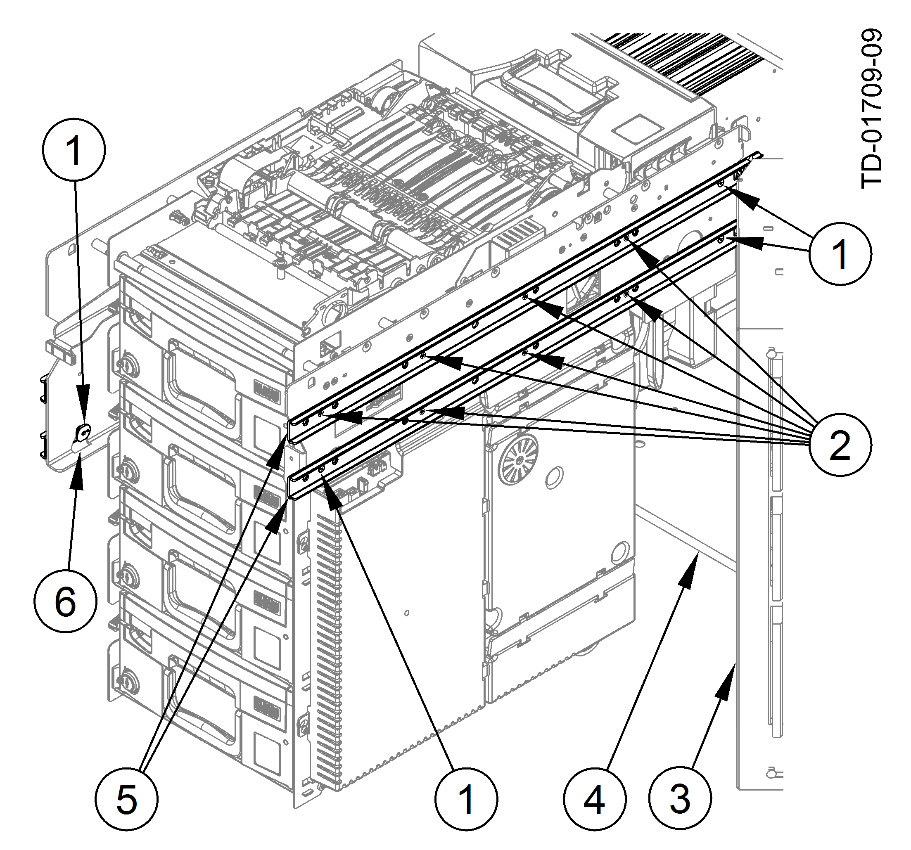

The CMD-V6C lower module is secured to slide assemblies with seven Torx screws on each side. Refer to CMD-V6C Slide Screws .
CMD-V6C Slide Screws
1
DO NOT remove the mounting screws for the alignment pins
2
Remove the seven Torx screws
3
Safe door
4
Safe
5
Slide assemblies
6
Mounting plate slot
WARNING
Make sure not to loosen or remove the mounting screws for the CMD-V6C lower module alignment pins during the following step (CMD-V6C Slide Screws ). These pins correctly position and help support the weight of the CMD-V6C. Equipment damage or severe personal injury could result if the alignment pins are loosened or removed.
DO NOT remove the mounting screws (three each side) for the CMD-V6C alignment pins (CMD-V6C Slide Screws ).
WARNING
The CMD-V6C lower module (without cassettes) is heavy. To prevent personnel injury or equipment damage, two people should lift and move the CMD-V6C in the following step.
Lift up and remove the CMD-V6C lower module from the system.